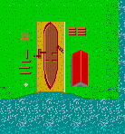

You get 300 units of wood for 100 coins of gold
You get 300 units of wood for 100 coins of gold
You get 300 gold coins for 100 units of wood
You get 300 units of wood for 100 coins of gold
Scouts
Scouts are specially trained pawns. To train a pawn to
become a scout, you need a fort. Here the pawns
learn how to explore foreign regions and to hide themselves. As a
consequence of this a scout can perform a
hide order.Doing this a scout becomes invisible for
opponent troops more then one field away from the scout. For them the
scout looks like a bush. Additionally a scout can see
much further than other units.
Catapults
Catapults are very powerful weapons for
long range fights. With these machines stones can be
thrown at buildings, walls or
citizens of other nations. Catapults require to
be a minimal distance from the desired goal. Therefore they cannot be used in
short range fights.
After use the catapults must always be reloaded. This takes a while and
therefore the frequency of thrown stones is relatively low. Catapults are
heavy and thus cannot be moved quickly. To construct a catapult
you require a smith to build the iron parts. Catapults
obey move and
fight orders.
This button toggles marking the captain of your ship (the first man on ship).
This one will toggle marking the whole crew, but the captain's marking will be untouched.
If more than one ship is marked by multiple selection it
becomes impossible to give orders to individual crew members. Therefore the
ship control panel disappears in this case.
If a ship is hit by any weapon of an opponent, the hit either causes damage to
the ship itself or to the ship's crew. The crew members can be
healed by scientists on the ship. If the
ship is damaged there is no way of repairing it. This means ships can never be
repaired, therefore you should always have at least one site with
docks to build new ships if the existing are becoming
too greatly damaged.
Each of these buildings supports a special type of citizen. See the table below.
| Name | Profession | Supported |
| Town Hall | Worker, Pawn | Unlimited |
| Farm | - | - |
| Camp | Knights | 10 |
| Mill | Archers | 10 |
| University | Scientists | 5 |
| Smith | Catapults | 2 |
| Fort | Scouts | 4 |
| Market | Merchants | 10 |
| Docks | Schips | Unlimited |
A fort is used to train pawns to become
scouts. Therefore a pawn enters the fort and
leaves it as a scout. A fort can support up to 4 scouts.
A market is used to store material for trading. Additionally it is
needed to train workers to become
merchants. A market can support up to
10 merchants. The merchants travel from market to trading points
and back. You may have only one market. Therefore it is important
to choose a good place for that market to minimized the length of your
trading routes.
Docks are used to build ships. Each dock can build as many ships as you wish.
But a ship itself is not armed. Therefore it makes no sense to build a lot
of ships if you do not have enough men to form the crews. To build
a dock you need 3x3 squares at height 1 adjacent to the water. Normally
buildings are not that resistant to attacks because they can
be protected by walls. But docks cannot be surrounded by walls, therefore
docks are built much more robustly to protect them against attacks from sea.
Ordering move will preserve the actual formation of the selected
citizens. During their march, the formation may temporarily be interrupted,
but at the final position the initial formation will be restored. The
move order is only accepted if all members of the
multiple select can reach their
destination point. The citizen selected first
will be moved exactly to the destination point.
After ordering concentrate, all selected citizens will try to reach the
destination point as near as possible.
This means formations are lost and not all citizens exactly reach the
destination point, but in principle the destination point must be reachable
by each of them, otherwise the order is not accepted.
While carrying out a move operation the route may be blocked by
obstacles such as a walls, buildings, etc. Additionally each individual has
its own idea of a nice route. Therefore it may happen that the
citizens work along unexpected routes. E.g. they may
decide to leave a fortification, even if you prefer a way somewhere behind
your walls. In this case you have to provide subgoals to force your men to use
the routes you'd like to see them taking.
Many orders like harvest or
fight may produce movements implicitly
if this is required to come closer to an important point (e.g. to hit an
opponent).
The order search and destroy causes the
selected troops to attack any foreign
citizen or building near the
destination point. If an enemy leaves the
destination area it will not be followed by
your troops. Search and destroy can be used to clear a
selected area of enemies without causing a redistribution of your troop
concentrations.
The order follow and destroy works like search and destroy,
but the enemy is followed by your troops. This may result in a radical
redistribution of the troops, but it is quite useful for eliminating scattered
enemies that have no chance of receiving reinforcement.
And finally each of your armed men performs self-defence if it is approached
by an enemy in range of his own weapon. But the men don't walk,
they don't even run away. Thus a Scientist will
cast all his own citizens and
buildings which are close to him if their
health is below maximum.
Finally it should be mentioned that it is impossible to attack your own
citizens, but you may attack your own
buildings. E.g. if mines have been exhausted,
it is quite useful to destroy
your own town halls and to rebuild them near a fresh
mine somewhere else.
If an heap or dig order is to be performed on a square
this can be ordered by heap to and dig to. E.g. if these
operations are applied along a column or line of width one, it can
easily be used to build walls or moats. Heaping and digging requires
small amounts of gold and wood
to buy building material. As a special case of digging a worker can construct traps. These hidden holes may be quite useful for
weakening enemy forces during their marches.
Per default each worker uses the
town hall of its own recruitment as home. But the
home
can be changed by giving a move order to the
worker. If the
destination point of this order is another of your
town halls, the home will be switched to this location.
Using a Cast all, the scientist will
sequentially cast all own citizens, own
buildings and foreign workers
in the destination area.
Market
Docks

Orders
There are various classes of orders which can be given to the different
citizens and the administration of
buildings. Each profession or building supports
different mixtures of orders. When a citizen receives a new order he forgets
his current order and starts obeying the new one.
In case of the IDLE order this means an immediate stop.
Move Orders
There are two kinds of move orders. The difference lies in their behavior if a
multiple selection is active. In case of a
single selection there is no difference between
these two orders.Guard Order
All your fighting citizens obey the guard order. The man looks out for
enemies and if any goal is seen within a range of 6 fields, then it is
attacked automatically.
Fight Orders
There a 4 different ways of starting a fight.
The explicit attack order is used to force the
selected troops to attack the
citizen or buildings at the
destination point, if there are any. In the case of
catapults it is also possible to order an attack to
destroy a wall.Recruit Orders
If you select buildings, the
possible recruit orders of the building are shown in the
order panel. Recruiting and training a
citizen consumes gold and
wood, the amount needed is shown in order panel behind
the orders.
After selection of a building it is shown, how many citizens can still be
recruited, before the support capacity of the building is exhausted.
All buildings except a town hall and a
farm have the ability to perform recruit
automatically, if the current resources are above a specifiable level.
There are two dials in the order panel
that allow adjustment of these levels. The zero-button is a toggle button, if it is pressed, the
building starts to produce as much units as possible, if it's released, the production is stopped
immediately.
Construct Orders
If there is enough gold and wood
available and if there exists a least one town hall,
after selection of a worker, the
order panel shows what kind of buildings can be
constructed. At the destination point of this
order, there must be a square of flat land. After receiving the
construction order, the worker will walk to the
destination point and he will start to construct
the building. This process takes a while. If the worker is interrupted
during construction, e.g. by other orders or by being killed (haha), the
construction site breaks down and the gold and
wood for construction is lost, without finishing any
building.
Excavation Orders
A worker can perform two kinds of excavation
orders. He may either dig or heap. Digging decreases
the height of the landscape by one step, and
heaping increases the height. Depending on the heights of the
neighboring fields this can be used to build walls, moats, or bridges.
See the description of the landscape to
understand the consequence of these orders.Harvest Orders
Harvest orders are given to workers. The
destination point of the harvest order can
either be a mine or a tree or
a bush.
In the case of a mine the worker will start to dig gold
from the mine, until it is empty.
In the case of a tree or bush, the worker will continue to harvest
wood in an area around the initial
destination point until all trees and bushes have
been cut.
The harvested wood and the gold from
the mines is carried to the home town hall of the
worker.
Cast Orders
Casts performed by scientists may have
one of three effects.
Casting a citizen of the own nation increases the health of this individual to maximum.
Casting a worker of another nation will
persuade the worker to become a member of your
nation.
Casting one of your own buildings will increase
the health of the administration of the building to a
maximum.
Upgrade Order
Upgrade orders can be used to force workers to become
merchants and pawns can be
forced to become Scouts. The orders need no
specification of goals, because the citizen automatically selects the
market or the
fort to be entered for training.
Trade Order
The trade order tells a merchant which
trading point should be served. The trading
point is specified by clicking on it.
Hide Order
Hide orders can be used to tell scouts where to hide.
After clicking on a goal point, the scout starts to move to this point. At
this point the scout camouflages himself as a bush.
The Landscape
The operation area as shown in the
tactical panel
consists of various types of landscapes. Each type has different properties
relevant for the movement of your troops.
Grass
 Most parts of the area are covered by grass. It is easy to travel over
grassy land.
Most parts of the area are covered by grass. It is easy to travel over
grassy land.
Mud
Whenever some excavation work is done, muddy areas are produced.
Travelling over mud is as easy as travelling over grass, but the
presence of mud gives an indication that somebody excavated
recently.
Trees
It is impossible to travel trough forests, because they are too dense and
your citizens dislike the annoying flies. Anyway trees can be chopped down by
workers to produce wood.
Bushes
As with trees, there is no travelling through bushes, but bushes can also be
cut to produce wood.
Water
Since none of your men knows how to swim, there is no way through the water.
If any unit or building is
flooded by water this will cause death and destruction. If you
dig too deep, then you will hit the
water table and flood the hole and all neighboring fields that are
below sea level. If any land reaches a height above sea level,
then it
will automatically turn to dry mud land. This enables
workers to cross rivers by applying the
heap order for a few times.
Building a bridge is
thus like building a wall across the water.
Sea
Sea is water with depth of at least 3. It has exactly the same
properties as normal water, but it is impossible to heap or to dig
near a sea field. This makes the building of
bridges between islands in the ocean impossible.
Hill
You are standing on an absolutely flat landscape and give a single
heap order. The result is a
muddy hill, that's it. Running up a hill is slower than on the flat,
but it is not an unassailable obstacle.
Hole
A hole is the result of a single dig order
applied to a flat piece of land. Running downhill is no problem, in fact
the unit will be quicker while running downhill.
Walls and Moats
Heaping or digging
twice at the same position results in walls and moats. Walls or moats cannot
be crossed.
Fortifications
If a wall is increased in height again, you will get a fortification.
Landscape in a bit more detail
In fact the story of the different land heights is a bit complicated.
Each square of land has four neighbors, each of which
may have a height differing from that of the middle
square. The difference may be any values from -3 to +3. Depending on this
difference, the corresponding edge of the actual square will be anything
from a normal peace of land to a fortification. See in the table below
for details.
|
|
Normally a worker can heap or dig to/from any neighbouring square or on the square it is standing on. The only execption is that it is not allowed to heap at a square which is two or more units below the current square the worker is standing on. This means fortifications cannot be enlarged from the inner side, you have to leave your secure walls to do this!
| type | move | dig | heap | harvest |
| grass | + | + | + | - |
| mud | + | + | + | - |
| tree | - | - | - | + |
| bush | - | - | - | + |
| water | - | + | + | - |
| sea | - | - | - | - |
| hill | + | + | + | - |
| hole | + | + | + | - |
| wall | - | + | + | - |
| fortification | - | + | - | - |
health = health - max (1, effect - armor)
where the effect and armor are the following :
| unit | armor | effect |
| worker | 0 | - |
| scientist | 0 | - |
| pawn | 10 | 25 |
| archer | 5 | - |
| knight | 15 | 30 |
| catapult | 20 | - |
| ship | 98 | - |
| building | 25 | - |
| arrow | - | 30 |
| trap | - | 80 |
| stone | - | 100 |
A few Hints
Normally it is always good to :
And of course many other things like keeping formations during a fight,
obeying the different move speed of units, etc.
Materials
Your economy is dependent on various resources. These resources are
Food
You need something to feed the mouths of your citizens. Food is produced by
farms. Therefore you should always have at least one of
these structures. Your food will be stored in your
town halls. In your
administration panel you can get an overview of the current amount
of food in store. If this amount is below a certain level,the
health of your citizens begins to
decrease and finally they will die. The different professions need different
quantity of food and therefore they start to hunger at different levels of
stored food.
| type | start to hunger at |
| you | never |
| worker | 0 |
| pawn | 0 |
| archer | 70 |
| knight | 70 |
| scientist | 0 |
| catapults | 0 |
| ships | never |
It is surprising to see how blooming societies are reduced to
insignificance if there is no food, on the other hand building a
farm and waiting for harvest takes a while, so
always be careful with your food and start to build farms early enough.
On the other hand farms are wonderful targets for attacks.
The orders can be given by pressing
the button, or by typing the capital letter on the button. Most
commands require a specification of a
destination point. This can be done in the
tactical map as described below. After
your order has been accepted, the button is
released again. Additionally you see the health
of a unit, if it is selected by
single selection. In case of
buildings you can also see the degree of
completeness of construction and training processes running at the moment.
In this panel, you receive messages from your citizen. E.g. if you
try to submit a command and this command is not executed then there
is normally a message in this window.
A click with the left mouse button selects the unit under the mouse
cursor exclusively.
A click with the middle mouse button can be used to toggle from
a set of
selected units. This means middle mousing an unselected unit adds this unit
to selected set, while middle mousing a selected removes it.
A click with the right mouse button has two functions. If any command
is waiting for a destination point specification
the command is canceled. If no command is pending the
tactical map is centered to the current mouse
point.
The selected units are surrounded by a red square. If you point on one of
your own units, the mouse cursor will be a circle, pointing on a foreign units
will switch it to a cross. If you point on yourself
(remember you are a knight), the the cursor will change
to an owl.
After pressing the order button in the
order panel, you can use the left mouse button
to set target to your mouse cursor in the
tactical map window. After doing this the order
button is released and the selected units begin to execute your order.
Sometimes the button will not be released, if this is the case, then your
order could not be executed and you should have a look on the
message panel to get an idea what's gone wrong.
If you press the right mouse button in the
tactical window, the current order is canceled,
the order button is released, but no new orders are submitted.
A few operations like search and destroy are
connected to destination areas. To specify such an area, you specify a
destination point as above and this point is used as the center of a
quadratic area around this point. The size of the area is fixed for all
operations and it is approximately 11x11 squares.
The game can be called as "craft". Now the option panel is displayed. It is used to
setup the general game parameters and the type and number of players and their properties.
Anyway you should make sure that the xhost permissions are properly
set, since this game is not a client-server game. The calling task always
wants to open windows on the other players' hosts.
Wood
Your workers can cut wood to produce timber for various purposes. Cutting
timber takes a while and you should start to do this early enough, before you
plan to built structures, or large armies of archers or catapults.
Gold
Gold is the driving force of your economy, so you should always have enough.
In fact most of your workers will be used to mine gold.
Control Panels
You see various control panels on your screen. With these panels you can
retrieve
information about your current progress and you can give orders to members
of your nation. The screen looks like
Administration Panel
This panel is shown in the lower part of the
order panel.
At this panel, you see the number of citizens you
are commanding, the amount of wood which is at store
and the number of gold coins in your cash-box.
Additionally you see how much food is stored for
your citizens.
Order Panel
This panel shows the list of the orders you can
submit at the moment. The kind of orders
possible depends on the number and type of
selected citizens or
buildings. Behind each order is shown
how much gold (in yellow digits) and how much
wood will be consumed if this order is
performed.
Message Panel

Strategic Map
This map gives an overview of the entire area where you can operate.
By clicking the left mouse button on a point in this map, your
tactical window is centered on this point. It is a good idea always
to have an eye on this window, to make sure that there are no
unrecognized enemy movements which are not displayed in the tactical
panel at the moment.
Tactical Map
This panel contains a zoomed view of a part of the operation area. In
this window you can see all citizens and
buildings that are visible for you at the
moment.
Each of your citizens has only a limited range of view. Everything
outside the view of your citizens is gray and unknown for you. The
tactical map is used to perform
select operations and
destination point specification.
By clicking with the right mouse button, the map is centered to
mouse position. This is only true if there is no
destination point specification is
pending, in this case, the current order will be canceled.
Group Control Panel
If you have selected one or more of your citizens,
you may put them into a group. This can be done by clicking on
one of the grouping buttons in your group control panel.
Whenever you click on the corresponding group focus button, the
same units will be selected and your windows will be centered on the
middle of the group. This enables a quick change between different
independently acting groups, even if the groups are far away from
each other. Especially in battles it can
be very useful for commanding your troops if you have split them to
surround the enemy.
Pause Panel
The pause panel allows each player to stop the game temporally, by
pressing the button with his name. E.g. the panel above shows a game
where "hua" paused. Pressing the button again shows your willingness to
continue the game. If all buttons are released, the game continues.
Selection Operations
To give orders to citizens or
buildings you have to specify the units. This is
done by selecting the unit in the tactical map.
Destination Point Specifications
Most instructions need the specification of a destination point. E.g. this
can be the unit to be attacked, or the place where a building should be
constructed.
The Winner of a game
There can only be one winner. If you have been killed the game is
over and you fail to get a reputation as a remarkable king. If you
manage to survive longer than all the other kings, you are the "cha
chan", the king of the kings and one may call you the winner.
Installation of the Game
Supported
All this stuff can be retrieved from
http://borneo.gmd.de:80/~hua
What to do ?
System Requirements
There are precompiled versions for LINUX and SUNOS 4.1.3. The SUNOS version also runs under
SOLARIS normally.
How to call the game?
To call the game, you must always be in the directory where the executable
"craft" is located. This is needed since the game has no proper installation
and therefore only relative paths are used to locate all data files needed.
The human may either have a king or not.
If there is a king, the player loses if the king is killed.
The king is a knight).
The scope of the player may be limited to a local sight around the
citizen, or it may be global.
There are either 2 or 3 human players or one human and one robot player.
The game may play "on land" or the landscape may consist of an ocean
with various islands.
The landscape is generated by random. If a seed is entered (any sring
of letters), it is used as start value for the random. Therefore
a seed can be used to reproduce the same landscapes by using the
same seeds.
What's new since version 2.x?
The robots
I spent a lot of time improving robots from version 2.x to version
3.x. In version 2 it was quite simple to kill the robot if it was
forced to attack a fortification. In the current version, the robot
knows a bit more about "how to attack fortifications". It is not
perfect, but I hope it plays much better. In a conflict with ships, a
single wrong decision can be fatal (e.g. losing a ship with many
expansive catapults on it). Therefore the robot does not play that
well in worlds with islands, I am still working on it, but it may
need much more time. I have tried many other games like C&C, Z or
Warcraft and I am proud to say that I think my robots are
"quite intelligent" (even if they are still unbelievably stupid) !!!
A few Remarks from the Author
This game is a more or less serious offspring of our work on adaptive
agent systems. The final intention of this game is its use as an
experimental environment for different automatic adaptive players.
The whole thing should finally run in a client server version, which
enables the participants of the game to act in real time concurrently.
The quicker one can give orders, the quicker one may do it.
The game should have closed rules (is ok), should be quite complex
(is true for these silly adaptive methods) and should also motivate a
human to play online against these crazy adaptive robots (check it out).
So long, HUA
Contents